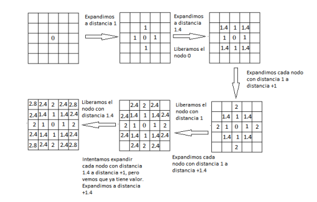

Silvia Calvo Cabello
Se desarrolló un programa en Unibotics para un taxi autónomo en una ciudad dado su mapa. En esta práctica solo se usará navegación global.
El objetivo consiste en dar targets al coche y que este mediante un algoritmo de búsqueda (BFS) debe encontrar el camino de menor coste hasta llegar a dicho target.
Primero, el código carga el mapa de la ciudad con obstáculos y una posición de destino. Luego, se calcula un "mapa de costos", el cual asigna un valor a cada celda del mapa que refleja la dificultad de alcanzar esa celda desde el objetivo, considerando tanto los obstáculos como la distancia desde el destino. A medida que el vehículo explora el mapa, se generan los costos de movimiento en función de las celdas vecinas.
Simultáneamente, se calcula el mapa de obstáculos, que tiene en cuenta el radio de influencia de cada obstáculo y asigna un valor alto a las celdas cercanas a los obstáculos, haciendo que esas áreas sean menos atractivas para el vehículo. Estos dos mapas, el de costos y el de obstáculos, se combinan para crear un mapa total que le indica al vehículo qué áreas son más fáciles de transitar y cuáles deben evitarse.
Para finalizar, el código utiliza el mapa total para determinar el siguiente movimiento del vehículo. Para ello, busca la celda vecina con el menor costo dentro de un radio alrededor de la posición actual del vehículo. Luego, calcula el ángulo necesario para que el vehículo se oriente hacia esa nueva celda y lo mueve en consecuencia. El proceso se repite hasta que el vehículo llega a su objetivo.
El algoritmo de búsqueda por superficie (BFS) es un tipo de búsqueda no informada (sin heurísticas) que explora un espacio de estados a través de niveles de profundidad.
Exploración por Niveles: El algoritmo comienza explorando el nodo inicial (target) y luego se expande a todos los nodos en el siguiente nivel (pixeles adyacentes), luego a todos los nodos en el siguiente nivel y así sucesivamente.
Estrategia de Exploración: Se exploran los nodos más cercanos al nodo raíz antes de explorar nodos más lejanos.
Estructura de Datos: Se usa una cola (FIFO) para almacenar los nodos que serán explorados, ya que la búsqueda en anchura explora primero todos los nodos de un nivel antes de proceder al siguiente.
Condición de Parada: El algoritmo puede parar cuando:
- Se encuentra el objetivo.
- Se han explorado todos los nodos posibles (en el caso de que el espacio de búsqueda sea finito).
Mapa de costes: Se calcula mediante el método de busqueda BFS, y siendo el valor del coste, la distancia al target, como se muestra en la siguiente imagen:

Para calcular la distancia, se almacena en cada nodo a explorar tanto su nueva posición como el nodo padre al que pertenece. De esta manera, se calcula la distancia desde el nodo actual hasta su nodo padre, y este valor se suma al coste acumulado del nodo padre.
El orden en el que se recorren los nodos hijos es crucial para garantizar una correcta suma de los píxeles. Es importante inspeccionar primero las posiciones adyacentes y a continuación, las esquinas, siguiendo el patrón de recorrido: [0,-1], [0,1], [1,0], [-1,0], [-1,-1], [-1,+1], [1,1], [1,-1].
Tambien hay que añadir inf de coste a los obstaculos, para asi, que en la navegación nunca vaya por ahí.
Mapa de obstáculos:Para calcular los obstáculos, se recorren los nodos añadidos previamente a una cola durante el cálculo del mapa de costes. A los píxeles adyacentes a estos nodos (siempre que no sean también obstáculos) se les asigna un coste adicional como penalización.
En la navegación de este proyecto, se evalúa continuamente el píxel de menor coste dentro de un radio X alrededor del coche. A partir de esta información, se calcula el ángulo entre la posición actual y la posición final, considerando la orientación del robot. Este ángulo determina la velocidad angular del coche.tual y la final, teniendo en cuenta hacia donde mira el robot, y esa es la velocidad angular del coche
Paso de coordenadas Worl a Map y viceversa:
El mapa se representa como una matriz en la que las coordenadas se almacenan de izquierda a derecha y de arriba hacia abajo. En cambio, en el mundo real, la coordenada (0,0) corresponde al punto de inicio del coche (ubicado en el centro del mapa). Debido a esto, las coordenadas no coinciden directamente entre ambos sistemas. Además, debido a las diferencias en los sistemas de referencia, las coordenadas x y están intercambiadas: lo que en uno corresponde a la x, en el otro es la y, y viceversa.
Representacion del mapa:
Los costes se calculan en una matriz que admite decimales, pero en la represenacion del mapa, este solo admite enteros de 0 a 255, por lo que se hace una conversion y un grimpado para su correcta visualizacion.
Cambiar de target:
Esta práctica se ha implementado de tal forma que una vez selecionado el target, no va a cambiar hasta que llegue al objetivo, y una vez alcanzado este, ya vuelve a calcular para el siguiente.
Espacios en blanco en el mapa:
Como se peude ver a continuación, el mapa tiene linea en blanco atravesando las calles por las que puede ir, eso se debe a que esas cuadriculas todavia no se han explorado, por lo que su coste es inf, y al representarse se ve blanco.

Cálculo del cost_map:
Realicé varias pruebas en las que los resultados no eran correctos debido al orden en el que se recorrían los nodos hijos, como se mencionó anteriormente. Inicialmente, para familiarizarme con la conversión entre el mapa y el sistema de coordenadas del mundo, comencé calculando la distancia de cada píxel al objetivo sin usar BFS. Este enfoque me permitió entender mejor la relación entre ambos sistemas de coordenadas. Posteriormente, el cálculo final del mapa de costes se realiza utilizando BFS, tal como se explicó previamente.
Cálculo del wall_map:
Para calcular el mapa de obstáculos, al principio no tomaba en cuenta los obstáculos detectados por el cost_map y realizaba el cálculo sobre todo el mapa. Más adelante, optimicé este proceso, descartando las áreas donde no se había calculado el coste, lo que mejoró la eficiencia del algoritmo.
Navegación:
Al principio, para determinar las casillas hacia las cuales se dirigía el coche, utilicé un enfoque en el que el vehículo se desplazaba de un píxel a otro, buscando siempre el píxel de menor coste. El coche llegaba a ese píxel, luego buscaba el siguiente con menor coste, y así sucesivamente. Este método ocasionaba que, en ocasiones, el coche se girara inesperadamente debido al error mencionado anteriormente en el orden de los nodos hijos. Una vez corregido este problema, la navegación mejoró significativamente.
Problema de ir hacia arriba:
Una vez hecho todo el proyecto, este no funcionaba al dirigirse hacia arriba en remoto y nunca iba en local, esto se debia al coste de los obstaculos (0) por lo que al intentar navegar se dirigía hacia las posiciones donde había obstáculos. Para solucionarlo, añadí que el coste fuese infinit por donde no pudiese ir el coche.
A continuacion se puede ver el funcionamiento del coche recorriendo la ciudad con varios objetivos.